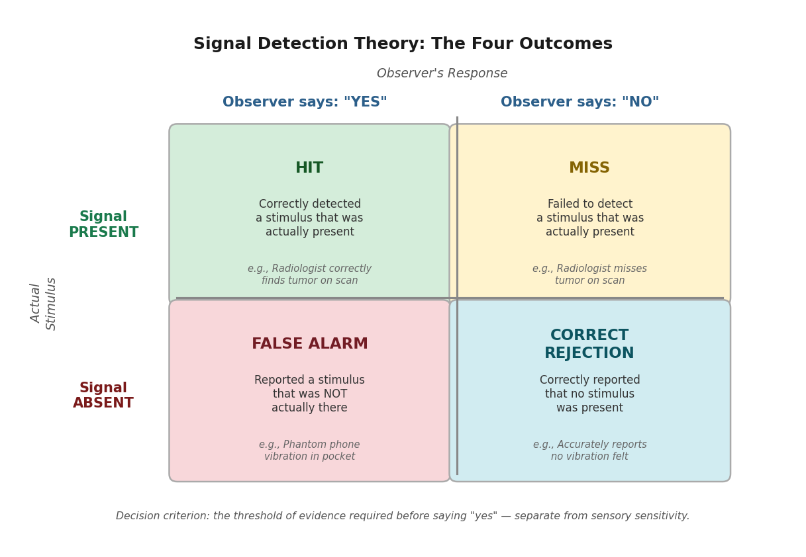
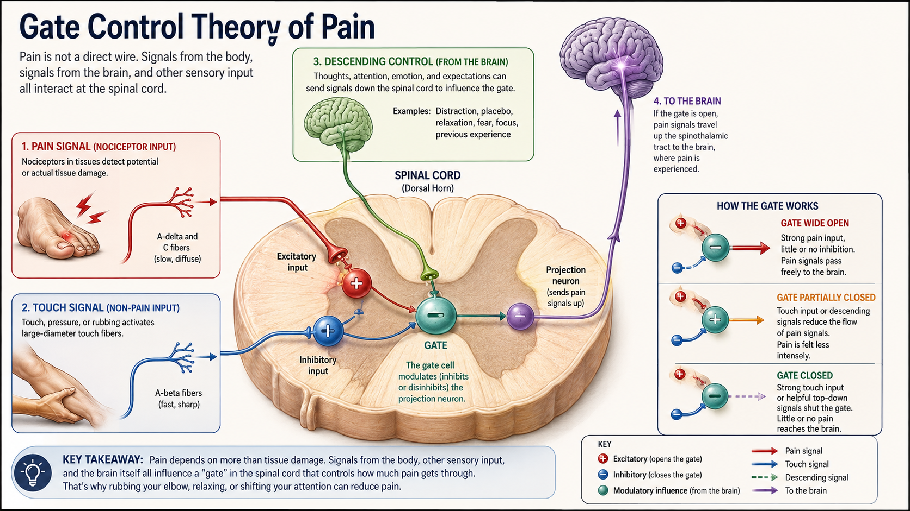

Sensation and Perception
"Your eyes work like a camera: they record the world exactly as it is, and your brain just plays the recording back."
This is an easy thing to believe, because vision does not feel like work. You open your eyes and the world is simply there — sharp, colored, three-dimensional, already organized into objects and distances. There is no felt sense of construction, no moment where you can catch your brain in the act of building the scene. Compare that to, say, solving a math problem, where you can feel yourself working through steps. Seeing feels immediate. So it is natural to assume that what you experience is a more or less direct transcript of what is actually out there.
It is not. Two simple demonstrations make this concrete before we ever get to the underlying mechanism. First: your retina has a blind spot — a region with no photoreceptors at all, where the optic nerve exits the eye — yet you do not see a hole in your visual field, because your brain fills it in with a plausible guess based on the surrounding pattern. A camera with a dead patch of sensor would simply show a dead patch; your visual system edits the dead patch out and shows you something that was never actually sensed. Second: read the phrase in this sentence quickly, out loud, instead of slowly word by word, and see see if you notice anything unusual about it. Most readers do not catch the repeated word on the first pass, because the brain expects the sentence to make sense and skips over evidence that it does not. A beginning reader sounding out each word individually is far more likely to catch the error. Both demonstrations point at the same conclusion: your visual system is not a passive recorder. It is constantly filling gaps, editing out anomalies, and making confident guesses about what is probably there — using a mix of the raw input and what you already expect to see.
The evidence for this goes well beyond a couple of clever tricks; it is one of the organizing distinctions of this entire chapter, between processing that is purely bottom-up (built from the raw data) and processing that is top-down (shaped by expectation, memory, and context). A camera only does the bottom-up part. Your visual system does both, constantly, and it is often impossible to tell from the inside which parts of your experience came from the world and which parts your brain supplied on its own. Later in this chapter, we will use a genuinely modern version of the camera-versus-brain comparison — a car that is marketed as having "vision" — to make this distinction concrete, because the engineers who built that system ran headfirst into the exact same problem your visual system solves every waking second.
Where This Fits
Chapter 3 explained how a neuron generates an electrochemical signal; this chapter is about how that same basic mechanism gets aimed at the outside world. Every sense organ in this chapter — retina, cochlea, skin — is, at bottom, doing the same job: converting one kind of physical energy into the neural signaling Chapter 3 already covered, then handing the result to a brain that has to make sense of it. That second step turns out to be far more active and inference-driven than common sense suggests, which is why the chapters ahead lean on this one constantly: selective attention and the famous "cocktail party effect" (Chapter 5) are really questions about which sensations get promoted to conscious perception, and the constructive, expectation-driven nature of perception introduced here previews the equally constructive nature of memory (Chapter 7) — what never gets perceived in the first place can never be remembered later.
Learning Objectives
- Differentiate sensation from perception, and explain transduction as the physical process common to every sense organ.
- Define absolute threshold and difference threshold (Weber's Law), and apply signal detection theory to a real-world detection problem involving uncertainty.
- Describe the basic anatomy of the visual and auditory systems, and trace how each converts physical energy (light, sound waves) into a neural signal.
- Explain why trichromatic theory and opponent-process theory of color vision are complementary rather than competing, and apply the same logic to place theory and frequency theory of pitch perception.
- Distinguish top-down from bottom-up processing, and use Gestalt principles and perceptual constancy to explain how perception actively organizes incomplete sensory input into a stable experience (APA IPI Theme 5: our perceptions and biases can be inaccurate).
- Explain the gate control theory of pain as a case where a "purely physical" sensation turns out to be shaped by signals descending from the brain.
- Apply the evolutionary perspective to explain why a specific sensory system is tuned the way it is, rather than some other plausible way it could have been built.
Section 1: The Basics — Detecting a Changing World
Before anything else, this chapter needs one foundational distinction in place, because almost everything else builds on it. Sensation is the physical process by which a sense organ responds to a stimulus and converts it into a neural signal — light hitting your retina, a sound wave reaching your eardrum, a chemical binding to a receptor on your tongue. Perception is the psychological process of organizing and interpreting that signal so that it becomes a meaningful experience — recognizing the light pattern as your friend's face, the sound as your name being called, the taste as the coffee you ordered. Sensation begins with receptor transduction at the sense organ; perception emerges as the nervous system organizes and interprets those signals — a process that starts surprisingly early (the retina and cochlea both do real preprocessing before a signal ever reaches the brain) and continues through many stages of the brain, not just one final "perception step."
Diagnostic question: a person with a particular kind of brain damage can have completely normal eyes, an intact retina, and a fully functional optic nerve — every sensory component working — yet be unable to recognize faces, a condition called prosopagnosia. Is this a deficit of sensation or of perception? (Perception: the sensory machinery delivering the raw signal is intact; the breakdown is in the brain's later interpretation of that signal.)

Figure 4.1. Sensation begins at the sense organ; perception is built across many processing stages. Top-down expectations (purple arrow) feed back into earlier stages, which is why what you expect to perceive shapes what you actually do.
A useful starting question for this whole chapter, and one that fits the evolutionary lens this course keeps returning to, is: why does any organism sense anything at all? The answer is not "to have rich experiences" — it is that detecting relevant changes in the environment, and doing almost nothing else, is what kept your ancestors' ancestors alive long enough to have ancestors of their own. That framing explains a cluster of basic principles that hold across every sense organ we will cover in this chapter, human or otherwise.
The first principle is that detection has a floor. Each sense organ requires some minimum amount of stimulation before it registers anything at all — your eyes will not respond to an arbitrarily faint light, and your ears will not respond to an arbitrarily quiet sound. Researchers call this minimum the absolute threshold, formally defined as the smallest amount of stimulation needed for a person to detect a stimulus 50% of the time (not 100%, because detection at very low intensities is probabilistic, not all-or-nothing, and varies from moment to moment depending on fatigue, attention, and what you were just exposed to). Human sensory capability at this floor is genuinely remarkable: under ideal dark conditions, the human eye can detect the equivalent of a candle flame burning some 30 miles away, and under ideal quiet conditions, the human ear can detect a watch ticking from 20 feet away (Galanter, 1962).
Detecting whether something is there is one problem. Detecting whether something changed is a related but separate problem, and it follows a different rule. Pick up a 1-pound weight, then a 2-pound weight — the difference is obvious. Now pick up a 10-pound weight, then an 11-pound weight — also a 1-pound difference, but it is much harder to notice. This is Weber's Law: the smallest detectable difference between two stimuli — the difference threshold, or just noticeable difference (JND) — is not a fixed amount, but a roughly constant proportion of the original stimulus's size (Weber, 1834; formalized by Fechner, 1860). A bigger stimulus needs a bigger absolute change before the difference registers, even though the proportional change required stays about the same.
Before reading on — in your own words, what is the difference between an absolute threshold and a difference threshold, and how does Weber's Law connect to the second one?
Both of these thresholds — and the everyday experience of uncertain detection in general — are studied using a framework called signal detection theory, which formalizes something every one of us has actually lived through: deciding whether a faint stimulus was really there, under conditions where you cannot be certain. Imagine you are waiting for an important text message and you feel your phone vibrate in your pocket — except it turns out there was no message. Signal detection theory gives this experience precise vocabulary. A hit is correctly detecting a stimulus that was actually present; a miss is failing to detect one that was present; a false alarm is reporting a stimulus that was not actually there (the phantom vibration); and a correct rejection is correctly reporting that nothing was there. Critically, signal detection theory recognizes that your willingness to report "yes, I detected it" — your decision criterion — is separate from your actual sensory sensitivity, and the criterion shifts depending on the cost of getting it wrong. A radiologist scanning for a tumor and a teenager waiting for a crush to text back are running the same basic detection process, with very different criteria for how much ambiguous evidence is enough to say "yes."
| Stimulus was present | Stimulus was absent | |
|---|---|---|
| Said "yes, detected" | Hit | False alarm |
| Said "no, not detected" | Miss | Correct rejection |

Figure 4.2. Signal detection theory separates sensory sensitivity from the observer's decision criterion. Two people with identical sensitivity can have very different hit and false-alarm rates if their criteria differ.
Think of a recent time you thought you sensed something — a phantom phone vibration, hearing your name called in a noisy room, seeing movement out of the corner of your eye — that turned out not to be there. Using signal detection theory's vocabulary, was that a false alarm, and what do you think your decision criterion was doing in that moment?
Finally, sense organs respond strongly to a stimulus when it first appears, but progressively less as it persists unchanged — in effect, becoming tuned to change rather than to whatever is currently constant. When a stimulus stays the same for long enough, your receptors gradually stop responding to it — a phenomenon called sensory adaptation. This is why you stop feeling the weight of your own clothing within a few minutes of putting it on, why a persistent background hum disappears from awareness, and why the car radio that sounded perfectly reasonable last night seems blaringly loud the next morning — your auditory system adapted to the volume over the course of the drive, then reset overnight (Privitera, 2026). From an evolutionary standpoint, this makes excellent sense: a constant stimulus is, almost by definition, not new information, and devoting limited processing resources to monitoring it continuously would be a poor use of a metabolically expensive nervous system. What is worth your attention is what changes — which is exactly what the rest of this chapter's machinery is built to catch.
Section 2: Vision — From Photons to Faces
Light is, by a wide margin, the sense this course (and most introductory psychology courses) spends the most time on, partly because human vision is unusually well studied and partly because an enormous fraction of the cortex — by some estimates, nearly a third — is devoted to processing it (Buetti & Lleras, 2026). The story starts with transduction: the conversion of one form of energy into another, which is the job every sense organ in this chapter performs in its own way. For vision, that means converting photons of light into the electrochemical signal Chapter 3 already described.
Light enters the eye through the pupil, gets focused by the lens onto the retina — a thin layer of light-sensitive tissue lining the back of the eyeball — and is transduced there by two types of photoreceptor cells. Rods are extremely sensitive to dim light and are responsible for night vision, but cannot register color or fine detail; they are concentrated in the periphery of the retina and nearly absent from its center. Cones require more light to activate but provide both color vision and sharp detail; they are densely packed in the fovea, the small central region of the retina that you are using right now to read this sentence (Privitera, 2026). This is why a dim star seems to vanish if you stare directly at it — you are aiming your cone-dense fovea at it, when the rods in your peripheral retina would actually detect it better — and why you cannot read fine print using only your peripheral vision, no matter how hard you try.

Figure 4.3. Rods and cones are not evenly distributed across the retina. Cones are densest at the fovea (color, fine detail); rods dominate the periphery (dim light, motion). The blind spot, where the optic nerve exits, has no photoreceptors at all — yet you normally never notice it.
Depth perception draws on cues that require both eyes (binocular cues) and cues that work with just one (monocular cues):
| Cue | Eyes needed | What changes | Try it yourself |
|---|---|---|---|
| Binocular disparity | Two | Each retina receives a slightly different 2D image; the brain combines them into a 3D percept | Hold a finger about a foot from your face and close one eye at a time — the finger appears to jump sideways relative to the background |
| Convergence | Two | Both eyes rotate inward as an object gets closer | Watch a friend's eyes as they focus on something you move toward their nose |
| Accommodation | One | The eye's lens changes shape to keep a close object in focus | Hold a pencil at arm's length, focus on its tip, and slowly bring it toward your nose while staying focused — you will feel a distinct strain as the lens works harder |
All three cues are genuinely available to try right now, and accommodation in particular is one you can feel directly, not just reason about abstractly.
In the late 1950s and 1960s, David Hubel and Torsten Wiesel ran a deceptively simple set of experiments: they recorded the activity of single neurons in a cat's primary visual cortex while showing the cat bars of light at different orientations and positions (Hubel & Wiesel, 1962). What they found reshaped how psychology and neuroscience think about vision. Individual neurons in this region did not respond to "light" in general — each one responded selectively to a bar at one specific orientation, in one specific location, and stayed almost silent for every other orientation. Some cells preferred horizontal edges, others vertical, others a precise diagonal, tiled across the visual field like a set of specialized detectors. This was the discovery of feature detectors: neurons tuned to respond to a specific, simple feature of the visual scene rather than to visual stimulation in general.
The finding mattered for two reasons. First, it gave psychology a concrete, mechanistic answer to a question that had previously been almost entirely theoretical: object and scene perception does not start with the brain recognizing whole objects directly. It starts with a layer of neurons each registering one small, simple feature — an edge here, an orientation there — that gets assembled into more complex representations only at later stages of processing. Second, it earned Hubel and Wiesel the 1981 Nobel Prize in Physiology or Medicine, and it became one of the most direct pieces of evidence that the visual system performs real, identifiable computation rather than simply transmitting an image, the way a camera's sensor does. We will come back to feature detectors directly in the next section, because this exact finding turns out to be the single most concrete point of contact between human vision and the artificial vision systems built into modern camera-based driver-assistance technology.
In your own words, what did Hubel and Wiesel's cats teach us about how the visual cortex represents a scene — and why does "a few orientation-tuned cells, assembled into something more complex later" matter more than "the brain just sees the whole image at once"?
Color vision raises a puzzle that took roughly a century to resolve. The leading early account, trichromatic theory (Young, 1802; von Helmholtz, 1867), proposed that color perception depends on three types of cones, each maximally sensitive to a different wavelength range — informally, "red," "green," and "blue" cones — with every color you see produced by some combination of how strongly each type fires. This theory explains a great deal, including why mixing three colored lights of adjustable intensity can reproduce nearly any color the eye can perceive (the same principle behind every pixel on the screen you may be reading this on). What trichromatic theory cannot explain is the afterimage effect: stare at a brightly colored image for thirty seconds, then look at a plain white surface, and you will see a ghostly image in the opposite colors — red where there was green, yellow where there was blue. Opponent-process theory (Hering, 1892) explains this second phenomenon: retinal ganglion cells beyond the cones are organized into opposing pairs — red/green, blue/yellow, and black/white — and code color as the difference between the two members of a pair rather than as a simple combination of raw cone signals. This is also why you can never perceive a reddish-green or a bluish-yellow: the two members of an opponent pair cancel each other out rather than blending. Trichromatic and opponent-process theory are not rival explanations where one must be wrong — they describe two real stages of the same system, the first at the cones, the second at the ganglion cells that process the cones' output (Hering, 1892; Svaetichin, 1956).
The next time you notice an afterimage — after looking at a bright window, a camera flash, or a brightly lit screen in a dark room — try to name the color of the afterimage before you have read this section again from memory. Does it match what opponent-process theory predicts?
Section 3: From Sensation to Perception — How the Brain Builds an Experience
Section 1 introduced the distinction between bottom-up and top-down processing through a couple of quick demonstrations. Here is the formal version. Bottom-up processing builds a percept from the ground up, starting with the raw sensory data and assembling increasingly complex representations from it — exactly the kind of stepwise construction Hubel and Wiesel's feature detectors perform. Top-down processing runs in the other direction: your existing knowledge, expectations, and context actively shape what you perceive, sometimes overriding what the raw data alone would suggest (Privitera, 2026). Both are happening essentially all the time, in parallel, and the relative balance between them is a large part of what separates expert perception from novice perception in any domain — an experienced radiologist's top-down knowledge of what tumors typically look like changes what jumps out at them in a scan that, bottom-up, contains exactly the same pixels for an untrained viewer.
This is also a good place to look at a deliberately ambiguous image — the kind where the same bottom-up input supports two different top-down interpretations, and your perception flips between them depending on which one your brain currently favors. The classic example is a simple line drawing that can be seen as either a duck or a rabbit, depending entirely on which features you mentally group together; nothing about the ink on the page changes, only the interpretation imposed on it. The fact that your perception can flip between two completely different objects, with zero change in the actual sensory input, is about as direct a demonstration as exists that perception is not simply a transcript of sensation.
Hubel and Wiesel's feature detectors are the direct conceptual ancestor of the convolutional neural network (CNN), the architecture behind most image-recognition AI. A CNN's early layers are built to do almost exactly what Hubel and Wiesel found in the cat's visual cortex: detect simple local features like edges and orientations, then combine them into increasingly complex representations in later layers. This is not just a loose metaphor — researchers have directly compared trained CNNs' response patterns to recordings from biological visual cortex and found measurable correspondence in early layers.
This is where Jon's signature classroom comparison is useful: Tesla Vision, the name Tesla gives to the supervised, camera-based driver-assistance system used in Model 3 and Model Y vehicles sold in North America since May 2021, which relies entirely on an array of roughly eight cameras providing 360-degree coverage, with no radar or lidar (Tesla, n.d.). (Tesla calls its broader system "Full Self-Driving (Supervised)" — the name is aspirational marketing, and Tesla's own materials are explicit that the system requires active driver supervision and does not make the vehicle autonomous.) Eight well-placed cameras genuinely capture more raw visual data, from more angles, than a pair of human eyes ever could. If vision were just data collection, the car's system should win on data alone.
But the analogy breaks. Raw camera data is not perception any more than raw retinal stimulation is — both still require something like Hubel and Wiesel's feature-detection stage, plus a great deal of top-down work layered on top: deciding what in the visual stream matters right now (compression), where to direct processing (attention), and where a partially occluded pedestrian or fast-moving cyclist is about to be a moment from now (prediction). Human vision performs an enormous amount of this same forward-looking inference, constantly anticipating what comes next so that the roughly 100-millisecond lag built into early visual processing does not leave you reacting to a world that has already moved on (Enns & Lleras, 2008). Some vision scientists describe this through predictive coding — perceptual systems continuously generating and updating a model of what they expect to sense next, rather than rebuilding perception from scratch on every frame. Large language models do something that sounds related, generating a probability distribution over the next likely word — but the parallel is looser than it sounds: an LLM is not coupled to a continuously changing physical scene through the kind of sensorimotor feedback loop biological vision relies on, so the comparison illuminates the general idea of prediction without licensing the claim that a language model "sees" the way a visual system does.
What the breakdown tells us: collecting visual data was never the hard problem, for Tesla's engineers or for your own eyes — the difficult work, in both cases, is deciding what the data means. And it tells us why vision feels effortless: most of the compression, filtering, and prediction described above happens before anything reaches conscious awareness at all.
Two further organizing principles round out how the brain converts raw sensation into a stable, navigable world. Gestalt principles — from the German Gestalt, meaning roughly "whole form" — describe rules the visual system uses to group separate sensory elements into unified objects, first systematically described by Max Wertheimer and his collaborators Wolfgang Köhler and Kurt Koffka starting in 1912 (Wertheimer, 1912). The Gestalt psychologists' central claim, still accurate today, was that the perceived whole is not simply the sum of its sensory parts — your brain actively imposes organization that the raw data does not, strictly speaking, contain. A few of the most useful Gestalt principles: figure-ground organization is the tendency to automatically segment a scene into a focal object (the figure) and a background (the ground) — the same raw visual input can sometimes support two different figure-ground assignments, as in the well-known vase-or-two-faces illusion, where your perception flips between treating the white region or the dark region as the figure. Proximity describes the tendency to group elements that are physically close together as belonging to a single object, and similarity describes the tendency to group elements that share visual features (color, shape, orientation) even when they are not close together. Closure describes the tendency to perceptually complete an incomplete figure — a circle drawn with several small gaps is still seen as a circle, not as a series of disconnected arcs — which is really the blind-spot-filling trick from this chapter's opener, generalized into a broader principle.
![Figure 4.4 — Five-panel figure illustrating Gestalt principles. Panel A (Figure-Ground): a face-vase ambiguous figure that can be seen as either two facing profiles or a white vase. Panel B (Proximity): two spatially separated clusters of dots that group into two distinct objects. Panel C (Similarity): a grid of shapes where rows of circles and rows of squares appear to form separate horizontal bands. Panel D (Good Continuation): two intersecting curved lines that are perceived as two smooth, continuous arcs rather than four disconnected segments. Panel E (Closure): an incomplete circular shape whose gaps are perceptually filled in so that it still looks like a circle.](../images/ch04/fig_gestalt_principles_openstax.png)
Figure 4.4. Gestalt principles describe how the visual system organizes separate elements into unified wholes. Each panel above can be "read" more than one way — notice that your perception, not the image, does the organizing. Source: Spielman et al., Psychology 2e (OpenStax, 2020), CC BY-NC-SA 4.0.
Perceptual constancy is the related tendency to perceive an object as stable and unchanging even as the raw sensory information it produces changes dramatically — a door swinging open projects a rapidly changing trapezoidal shape onto your retina, yet you continue to perceive a single rectangular door rotating in space, not a series of different shapes (shape constancy). A person walking away from you produces a steadily shrinking retinal image, yet you do not perceive them as physically shrinking (size constancy); your visual system uses cues like distance and context to correctly infer that the object itself has not changed, only the size and shape of its retinal projection. Without perceptual constancy, the visual world would be in a state of constant, dizzying transformation every time you or anything in your environment moved at all — which makes constancy less an interesting quirk and more a basic precondition for being able to act on a stable world.
Section 4: Hearing and the Body Senses
Sound waves are funneled by the outer ear into the auditory canal, vibrate the eardrum, and are amplified by three tiny bones before reaching the fluid-filled cochlea, a coiled structure in the inner ear containing the basilar membrane, along which hair cells — the auditory system's transduction site — convert mechanical vibration into a neural signal (Privitera, 2026). How that system encodes pitch specifically was a genuine scientific puzzle for decades, and the two competing answers turn out, again, to both be partly right. Place theory holds that pitch is determined by where along the basilar membrane the vibration peaks — different frequencies maximally displace different locations, with high frequencies peaking near the membrane's base and low frequencies peaking near its tip, a mechanism directly demonstrated by Georg von Békésy's physical recordings of basilar-membrane motion, work that earned him the 1961 Nobel Prize (von Békésy, 1960). Frequency theory holds that pitch is instead encoded by the rate at which auditory neurons fire, with firing rate tracking the sound wave's frequency directly. Neither theory works alone across the entire range of human hearing: neurons cannot physically fire fast enough to track very high frequencies one-to-one, which is where place theory is indispensable; but place theory becomes imprecise at very low frequencies, where the basilar membrane's response is too broad and shallow to localize a peak — exactly where firing-rate information does the most work. The accepted modern picture uses both mechanisms, each covering the range the other one cannot.
Diagnostic question: a sound is so low in pitch that the basilar membrane fails to show a sharp peak anywhere along its length, yet listeners can still identify the pitch accurately. Which mechanism is doing the work, place or frequency? (Frequency — this is precisely the low-frequency range where firing-rate coding compensates for place theory's breakdown.)
Before moving on — in one sentence each, what does place theory explain well, and what does frequency theory explain well, about pitch perception?
![Figure 4.5 — Instructional infographic titled "Pitch Is Coded in Two Ways." Top section shows a cutaway cochlea and an unrolled basilar membrane labeled with frequency regions from high-frequency at the base to low-frequency at the apex, illustrating place theory. Bottom section shows waveform examples with slow and fast neural firing patterns, illustrating frequency theory's rate-coding for lower pitches. Labels identify the scala vestibuli, scala tympani, Organ of Corti, basilar membrane, hair cells, and auditory nerve.](../images/ch04/fig_cochlea_infographic.png)
Figure 4.5. Place theory and frequency theory solve different parts of the pitch-encoding problem. High frequencies are localized by where the basilar membrane deflects (place); very low frequencies are tracked by how fast auditory neurons fire (frequency). Neither mechanism alone covers the full human hearing range.
The skin, the body's largest sense organ, transduces touch, temperature, and pain through specialized receptors — mechanoreceptors for touch and pressure, thermoreceptors for temperature, and nociceptors for pain specifically — sending that information through the thalamus to a strip of cortex organized as a somatotopic map — a point-for-point representation of the body surface, with more cortical territory devoted to especially sensitive regions like the lips and fingertips than to less sensitive ones like the shoulder (Penfield & Rasmussen, 1950). Pain deserves special attention, because it is the clearest possible case for why an organism benefits from an unpleasant sensation rather than no sensation at all — without pain, there is no signal to withdraw a hand from a hot stove or rest a torn muscle, and people born with rare genetic conditions that eliminate pain perception entirely tend to accumulate serious, repeated injury precisely because nothing stops them.
For most of the twentieth century, the dominant model of pain treated it as a simple, direct wire from injury to brain: more tissue damage, more pain, full stop. This model could not explain a long list of real clinical observations — soldiers with severe battlefield wounds who reported little pain in the moment, chronic pain that persists long after an injury has fully healed, or the fact that rubbing an injured area, or distracting yourself, measurably reduces how much pain you feel from the same physical injury. Gate control theory, proposed by Ronald Melzack and Patrick Wall (1965), resolved this by introducing a "gate" at the spinal cord — a deliberately simplified model of spinal modulation, not a literal anatomical structure: pain signals traveling up from the body must pass through this gate before reaching the brain, and the gate can be partially closed by other incoming signals — including non-painful touch signals (which is part of why rubbing a stubbed toe genuinely helps) and, more strikingly, by signals coming down from the brain itself, including attention, emotional state, and expectation. Gate control theory was the first widely accepted model to treat pain as something the brain actively modulates rather than something the brain passively receives — a top-down influence on a sensation many people assume must be purely bottom-up, which connects this section directly back to Section 3's central theme.

Figure 4.6. Gate control theory proposes that pain signals must pass through a spinal "gate" before reaching the brain. Touch signals (rubbing an injury) and descending signals from the brain (attention, emotion, endorphins) can partially close the gate — reducing how much pain reaches conscious awareness.
Have you ever noticed pain less in the moment of an injury — during a sports game, an argument, a stressful event — only to feel it much more once your attention was free to focus on it? How does gate control theory account for that experience, in a way a simple "damage equals pain" model could not?
Sidebar: The Other Senses
Vision, hearing, touch, and pain are not the whole story. Two chemical senses — taste and smell — transduce molecules rather than physical energy. Taste (gustation) begins when chemical compounds dissolved in saliva bind to taste receptor cells on the tongue, with five basic qualities — sweet, salty, sour, bitter, and umami (savory) — combining with smell and texture to produce the much richer experience of flavor. Smell (olfaction) works differently: airborne molecules bind directly to olfactory receptors in the nasal epithelium, which project through the olfactory bulb to brain areas including the amygdala and hippocampus — a shorter, more direct route to emotion and memory than any other sense. This anatomy is why smells are so reliably good at triggering vivid autobiographical memories (sometimes called the Proustian memory effect after the novelist who described it) and why losing the sense of smell (anosmia) produces a much deeper disruption to the experience of flavor and mood than most people expect.
Two senses that are not on most people's intuitive list are the vestibular sense and proprioception. The vestibular system, housed in the inner ear's semicircular canals and otolith organs, detects head orientation and acceleration — giving you the sense of balance, the feeling of falling, and the nauseating input that drives motion sickness when vestibular information conflicts with what the eyes report. Proprioception is the sense of where your own body parts are in space, delivered by receptors in muscles, tendons, and joints. Close your eyes and touch your nose with your index finger: you just navigated entirely on proprioceptive feedback, without any visual input. Proprioception is almost completely invisible in everyday experience precisely because it works so well — and its disruption, as in certain peripheral neuropathies or experimental deprivation studies, produces a strikingly disorienting loss of bodily agency.
Chapter Summary
Sensation is the physical conversion of outside energy into a neural signal — transduction — and perception is the psychological process of organizing that signal into something meaningful; the two are related but separable, as cases like prosopagnosia make clear. Every sense has a floor (absolute threshold) and a smallest detectable change that scales with stimulus size (Weber's Law and the difference threshold), and signal detection theory adds the recognition that detecting a faint or ambiguous stimulus always involves a decision criterion, not just raw sensitivity. Sensory adaptation keeps attention focused on what changes rather than what stays constant.
Vision transduces light at the retina's rods and cones, with cones concentrated at the fovea for color and detail and rods dominating the periphery for sensitivity in dim light; depth perception draws on binocular cues like disparity and convergence and monocular cues like accommodation; color vision requires both trichromatic theory (three cone types) and opponent-process theory (paired ganglion-cell channels) to explain the full range of color phenomena, including afterimages. Hubel and Wiesel's discovery of orientation-tuned feature detectors in visual cortex showed that scene perception is built up from simple components rather than registered all at once — a finding with a direct modern echo in how convolutional neural networks, including the camera-only vision systems in vehicles like Tesla's supervised driver-assistance system, are architected, though the AI version still lacks the deep predictive, attention-driven inference that makes biological vision more than just very good data collection.
Top-down processing — expectation and prior knowledge shaping what you perceive — operates constantly alongside bottom-up processing built from raw sensory data, and Gestalt principles (figure-ground, proximity, similarity, closure) along with perceptual constancy describe specific rules the brain uses to impose stable organization on a sensory stream that is, on its own, ambiguous and constantly changing. Hearing relies on place theory and frequency theory together to encode pitch across the full range of human hearing, and gate control theory shows that even pain — a sensation that feels purely physical — is modulated by signals descending from the brain, not simply registered passively from the body.
Connections
| Concept from this chapter | Reappears in | Why it matters there |
|---|---|---|
| Transduction and the neural signal | Ch. 3 — Neuroscience & Biological Bases (review) | Every sense organ in this chapter hands its signal off to the same action-potential mechanism Chapter 3 already established — nothing new is needed at that stage |
| Top-down processing and expectation | Ch. 7 — Memory | The same expectation-driven construction that shapes what you perceive shapes what you later remember — memory is reconstructive for exactly the reason perception is |
| Signal detection theory | Ch. 14 — Psychological Disorders & Therapy | Clinical diagnostic decisions (is this symptom pattern a real disorder or normal variation?) involve the same hit/miss/false-alarm/correct-rejection trade-off introduced here, with much higher stakes |
| Selective attention (forward pointer) | Ch. 5 — States of Consciousness | This chapter raises which sensations get noticed at all; Chapter 5 covers the attentional mechanisms — including the cocktail-party effect — that decide the answer |
| Gestalt principles | Ch. 8 — Thinking, Language & Intelligence | The same grouping-and-organizing logic that structures visual scenes reappears in how people organize concepts, categories, and problem representations |
| Gate control theory of pain | Ch. 13 — Stress & Health | Chronic pain's interaction with attention, mood, and stress — a major topic in health psychology — depends directly on the descending modulation gate control theory describes |
| Evolutionary tuning of sensory thresholds | Ch. 1 — History & Approaches (review) | Chapter 1 introduced the evolutionary "what problem did this solve?" lens with a caution about overclaiming; this chapter applies it to concrete, measurable sensory tuning rather than a speculative behavioral story |
Review Questions
1. A patient has fully intact eyes, retina, and optic nerve, but cannot recognize familiar faces after a brain injury. This is best described as a deficit of:
Show answer & rationale
Answer: b. Why (a) is tempting: face recognition obviously involves the eyes, but the case description specifically establishes that every sensory component is working normally — the deficit has to be downstream, in the psychological process of interpreting an intact signal.
2. Weber's Law predicts that a person will more easily notice the difference between which pair of weights?
Show answer & rationale
Answer: b. Why (d) is tempting: all three pairs do involve the same 1-lb. absolute difference, but Weber's Law specifically predicts that detectability depends on the proportion of the original stimulus, not the absolute amount — 1 lb. is a much larger fraction of 5 lbs. than of 50 or 100 lbs.
3. In signal detection theory, a person who reports hearing their name called in a noisy room when no one actually called it has made a:
Show answer & rationale
Answer: c. Why (a) is tempting: a "hit" also involves reporting that a stimulus was detected, but a hit requires the stimulus to have actually been present — reporting detection of something that was not there is specifically a false alarm.
4. Rods and cones differ in that:
Show answer & rationale
Answer: b. Why (a) is tempting: it reverses the actual division of labor — cones, not rods, provide color vision, and rods, not cones, are specialized for dim-light sensitivity.
5. Opponent-process theory is necessary, in addition to trichromatic theory, primarily because trichromatic theory alone cannot explain:
Show answer & rationale
Answer: c. Why (a) is tempting: trichromatic theory is specifically the theory that accounts for three cone types, so it cannot be the gap that requires a second theory — the actual gap is the afterimage phenomenon, explained by opponent-process channels operating at the ganglion-cell level.
6. Hubel and Wiesel's recordings from cat visual cortex found that individual neurons:
Show answer & rationale
Answer: b. Why (a) is tempting: it would be the simpler, more intuitive finding — that "vision neurons" just respond to "vision" — but the actual discovery was much more specific: narrow tuning to particular orientations and positions, which is what made it the foundation of feature-detector theory.
7. A camera-only vehicle vision system like Tesla Vision can capture more raw visual data, from more simultaneous angles, than a human's two eyes. According to this chapter's AI Connection, why does this not automatically make the car's perception better than human perception?
Show answer & rationale
Answer: c. Why (a) is tempting: more raw data sounds like a straightforward advantage, but the chapter's argument is specifically that data collection was never the bottleneck — the difficult engineering problem, mirrored in biological vision, is what to do with that data: what to ignore, what to attend to, and what to predict.
8. The Gestalt principle of closure is best illustrated by:
Show answer & rationale
Answer: b. Why (a) and (c) are tempting: both are real Gestalt principles (proximity and similarity, respectively) covered in the same section, but closure specifically refers to perceptually completing an incomplete figure, not to grouping separate, already-complete elements.
9. Perceptual constancy explains why:
Show answer & rationale
Answer: a. Why (b), (c), and (d) are tempting: each is a real phenomenon covered elsewhere in this chapter, but only (a) involves the retinal image changing while the perceived object is correctly perceived as stable — the defining feature of constancy.
10. Place theory of pitch perception is most useful for explaining how listeners perceive:
Show answer & rationale
Answer: b. Why (a) is tempting: it reverses the actual division of labor between the two theories — frequency theory, based on firing rate, is the one that handles low frequencies well; place theory is indispensable specifically at high frequencies, where firing-rate coding breaks down.
11. According to gate control theory, which of the following could reduce the pain you feel from a stubbed toe?
Show answer & rationale
Answer: b. Why (d) is tempting: it reflects the older, pre-1965 model of pain that gate control theory was specifically developed to replace — the entire point of Melzack and Wall's theory is that signals other than the injury itself, including competing touch signals and descending input from the brain, measurably change how much pain reaches conscious awareness.
12. A researcher wants to know why human sensory thresholds (such as the eye's sensitivity to a single candle flame at 30 miles) are tuned to the specific levels they are, rather than being far more or less sensitive. Which approach does this chapter recommend for answering that kind of question?
Show answer & rationale
Answer: b. Why (a) is tempting: it sounds like the obvious evolutionary prediction, but maximum sensitivity is not automatically optimal — extremely high sensitivity often trades off against metabolic cost, noise, and false alarms, which is exactly why this chapter (echoing Chapter 1's caution about evolutionary explanations) recommends asking what specific trade-off a given threshold solves rather than assuming "more is better."
Key Terms
- Absolute threshold
- The smallest amount of stimulation needed for a stimulus to be detected 50% of the time.
- Accommodation
- A monocular depth cue in which the eye's lens changes shape to focus on objects at different distances.
- Basilar membrane
- A structure within the cochlea along which hair cells are arranged; its pattern of vibration is central to place theory of pitch perception.
- Binocular cues
- Depth cues, such as binocular disparity and convergence, that require both eyes working together.
- Bottom-up processing
- Building a perceptual experience from raw sensory data, piece by piece, without reliance on prior knowledge or expectation.
- Cochlea
- The fluid-filled, coiled structure of the inner ear where sound vibration is transduced into a neural signal.
- Cones
- Photoreceptors concentrated in the fovea that support color vision and fine visual detail in bright light.
- Difference threshold (just noticeable difference)
- The smallest difference between two stimuli that can be detected 50% of the time; governed by Weber's Law.
- Feature detectors
- Neurons in the visual cortex that respond selectively to a specific simple feature of a stimulus, such as an edge at a particular orientation.
- Gate control theory
- Melzack and Wall's (1965) theory that pain signals must pass through a modulatable "gate" in the spinal cord, which can be partially closed by competing sensory input or by signals descending from the brain.
- Gestalt principles
- Rules, including figure-ground, proximity, similarity, and closure, describing how the visual system organizes separate sensory elements into unified wholes.
- Nociceptor
- A specialized receptor in the skin and other tissues responsible for transducing pain.
- Opponent-process theory
- The theory that color is encoded by retinal ganglion cells organized into opposing pairs (red/green, blue/yellow, black/white), explaining afterimages and why certain color combinations cannot be perceived.
- Perception
- The psychological process of organizing and interpreting sensory signals into a meaningful experience.
- Perceptual constancy
- The tendency to perceive an object as stable despite continuous changes in the raw sensory information it produces.
- Place theory
- The theory that pitch is encoded by which location along the basilar membrane is maximally displaced by a sound wave.
- Rods
- Photoreceptors concentrated in the retinal periphery that support vision in dim light but not color or fine detail.
- Sensation
- The physical process by which a sense organ responds to and transduces a stimulus into a neural signal.
- Sensory adaptation
- The decrease in a receptor's response to a stimulus that remains constant over time.
- Signal detection theory
- A framework for analyzing detection decisions made under uncertainty, distinguishing sensory sensitivity from decision criterion and classifying responses as hits, misses, false alarms, or correct rejections.
- Top-down processing
- Perceptual processing shaped by prior knowledge, expectation, and context, rather than built solely from raw sensory data.
- Transduction
- The conversion of one form of physical energy (light, sound waves, chemical molecules) into the neural signal a sense organ sends to the brain.
- Trichromatic theory
- The theory that color vision depends on three types of cones, each maximally sensitive to a different range of wavelengths.
- Weber's Law
- The principle that the smallest detectable difference between two stimuli is a roughly constant proportion of the original stimulus's magnitude, not a fixed amount.
Further Reading
**Noba Project
Sensation and Perception** (Privitera) https://nobaproject.com/modules/sensation-and-perception The primary source for this chapter's treatment of thresholds, signal detection, sensory adaptation, vision basics, hearing, touch, and the chemical senses.
**Noba Project
Vision** (Buetti & Lleras) https://nobaproject.com/modules/vision A deeper treatment of visual processing, contrast, lateral inhibition, and the predictive function of vision that this chapter's AI Connection draws on directly.
Melzack, R., & Wall, P. D. (1965). Pain mechanisms: A new theory. Science, 150, 971–979. The original gate control theory paper
short, readable, and worth encountering before any secondhand summary, including this chapter's.
**Crash Course Psychology #7
"Perceiving Is Believing"** https://youtu.be/n46umYA_4dM A fast-paced, accessible video treatment of top-down processing and ambiguous figures, useful as a review or a first pass before reading Section 3.
Hubel, D. H., & Wiesel, T. N. (1962). Receptive fields, binocular interaction and functional architecture in the cat's visual cortex. The Journal of Physiology, 160(1), 106–154. The original feature-detector paper discussed in this chapter's Classic Study section, for students who want to see the actual data behind the famous finding.
References
Full citations for factual claims made in this chapter, for instructors or students who want to verify or go deeper. Distinct from Further Reading above, which is curated for student exploration rather than completeness.
Full citations for factual claims made in this chapter, for instructors or students who want to verify or go deeper. Distinct from Further Reading above, which is curated for student exploration rather than completeness.
Buetti, S., & Lleras, A. (2026). Vision. In R. Biswas-Diener & E. Diener (Eds.), Noba textbook series: Psychology. DEF publishers. http://noba.to/ngkr7ebh
Enns, J. T., & Lleras, A. (2008). New evidence for prediction in human vision. Trends in Cognitive Sciences, 12, 327–333.
Fechner, G. T. (1860). Elemente der Psychophysik. Breitkopf und Härtel.
Galanter, E. (1962). Contemporary psychophysics. In R. Brown, E. Galanter, E. H. Hess, & G. Mandler (Eds.), New directions in psychology (pp. 87–156). Holt, Rinehart and Winston.
Hering, E. (1892). Grundzüge der Lehre vom Lichtsinn. Springer.
Hubel, D. H., & Wiesel, T. N. (1962). Receptive fields, binocular interaction and functional architecture in the cat's visual cortex. The Journal of Physiology, 160(1), 106–154.
Melzack, R., & Wall, P. D. (1965). Pain mechanisms: A new theory. Science, 150, 971–979.
Penfield, W., & Rasmussen, T. (1950). The cerebral cortex of man: A clinical study of localization of function. Macmillan.
Privitera, A. J. (2026). Sensation and perception. In R. Biswas-Diener & E. Diener (Eds.), Noba textbook series: Psychology. DEF publishers. http://noba.to/xgk3ajhy
Svaetichin, G. (1956). Spectral response curves from single cones. Acta Physiologica Scandinavica, Supplementum, 39(134), 17–46.
Tesla. (n.d.). Autopilot and Full Self-Driving (Supervised). Tesla, Inc. https://www.tesla.com/autopilot
von Békésy, G. (1960). Experiments in hearing. McGraw-Hill.
von Helmholtz, H. (1867). Handbuch der physiologischen Optik. Voss.
Weber, E. H. (1834). De pulsu, resorptione, auditu et tactu: Annotationes anatomicae et physiologicae. Koehler.
Wertheimer, M. (1912). Experimentelle Studien über das Sehen von Bewegung. Zeitschrift für Psychologie, 61, 161–265.
Young, T. (1802). The Bakerian lecture: On the theory of light and colours. Philosophical Transactions of the Royal Society of London, 92, 12–48.